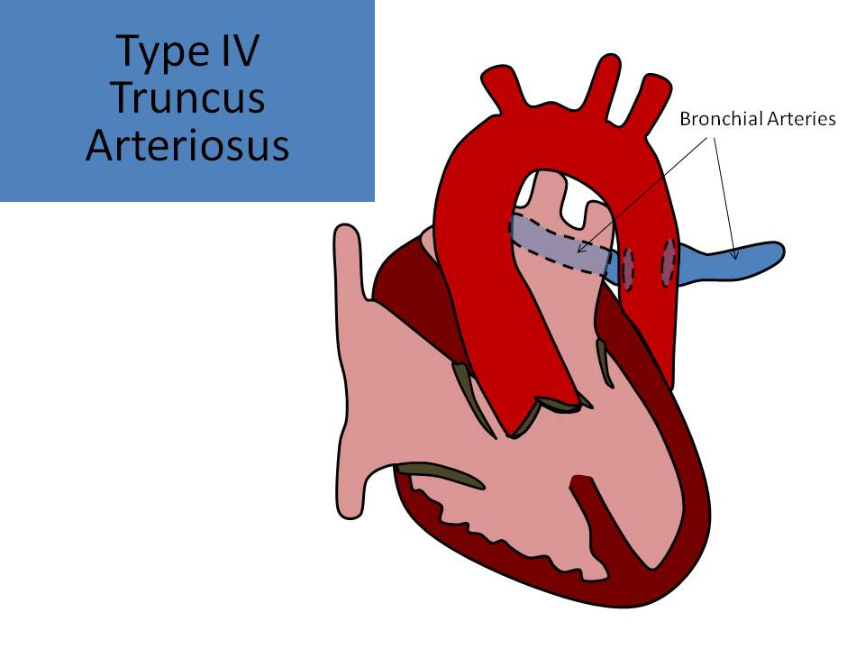

.jpg)
Truncus Arteriosus/Common Arterial Trunk
- Failure of fusion of the conotruncal ridges
- A single great vessel arising from the heart that provides circulation to the pulmonary artery, arch and coronaries
- 1.5% of congenital heart diseases
- Associated with:
- 22q11 deletion( DiGeorge, Velocardial facial syndrome)
- Maternal diabetes - most common defects are transposition of the great arteries, truncus arteriosus and tetralogy of Fallot; AVSD also shows a strong association with diabetes
- Associated conditions: VSD in nearly all cases, absence of ductus arteriosus (50-75%), right aortic arch (30%), interrupted aortic arch, atrial septal defect (20%), left superior vena cava, coronary artery anomalies, single ventricle (rare)
- Associated arrhythmias: complete heart block, SVT
- Extracardiac malformations seen in up to 40% of cases
- Collett and Edwards
- Type I - a common pulmonary trunk emerges from the truncus; short stem of the main pulmonary artery that bifurcates into the right and left pulmonary artery
- Type II - each branch pulmonary artery arises directly from the posterior portion of the trunk artery
- Type III - each branch pulmonary artery arises from the lateral aspect of the trunk artery
- Type IV - NO LONGER USED; form of pulmonary atresia without pulmonary arteries and an associated VSD; these findings are now diagnosed as pulmonary atresia with VSD
- Van Praagh
- A1 - a common pulmonary trunk emerges from the truncus with short stem of main pulmonary artery and bifurcates into the right and left pulmonary artery; most common
- A2 - each branch pulmonary artery arises directly from the posterior portion of the trunk as separate root; second most common
- A3 - one pulmonary artery arises from the trunk and the other arises from the descending aorta, being fed by patent ductus arteriosus
- A4 - truncus arteriosus with interrupted aortic arch
- Type I/Type A1 and type A4 are the most common types seen on fetal echo
- Large anterior malalignment VSD present
- Truncal valve: 1-6 leaflets ( most common 3 leaflets), maybe thickened and dysplastic, might have insufficiency or stenosis, may straddle both of the ventricles
- Truncal valve and root larger in size than normal aorta
- Truncal valve insufficiency is more common than stenosis
- If truncal valve insufficiency is present, CHF can develop in utero
- After birth, the foramen and ductus close causing a significant left to right shunt through the VSD
- If truncal valve insufficiency is also present, the newborn will develop pulmonary obstructive vascular disease by 6 months of age
- Four chamber view is normal and NOT a good view to diagnose truncus arteriosus
- Sometimes the VSD can be seen with four chamber view
- Abnormal cardiac axis: heart is more leftward
- Anterior malalignment VSD: best visualized in long axis view of left ventricle or five chamber view
- Three vessel view demonstrates a single large trunk vessel that represents the aortic arch
- Large truncal vessel with a single valve can be evaluated in the short axis view of the great vessels
- Absence of the pulmonary artery can also be demonstrated in the short axis view of the great vessels and the three vessel view
- Overriding single great vessel (if you identify an overriding aorta and VSD but the pulmonary artery is in the normal location = TOF)
- Only one semilunar valve
- Dysplastic and thickened truncal valve
- Truncal valve insufficiency is common (50%)
- Branch pulmonary arteries and main pulmonary artery arise from the trunk
- If abnormal pulmonary artery origins are identified, truncus can be definitely diagnosed BUT pulmonary arteries can be difficult to visualize in early gestation
- 50-75% have no ductus arteriosus; transverse arch and ductal arch views should be documented
- 30% have right sided aortic arch; three vessel trachea view should be documented
- Can also be associated with interrupted aortic arch


Truncus Arteriosus Type 1 (A1)
Truncus Arteriosus Type I (A1)
Truncus Arteriosus - Absence of the ductus arteriosus